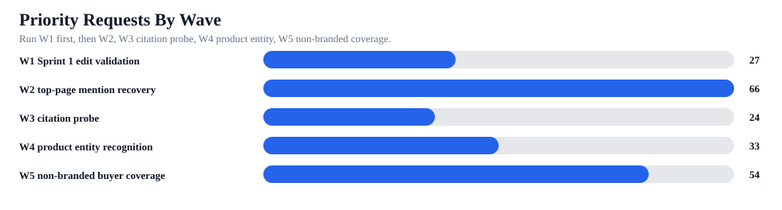
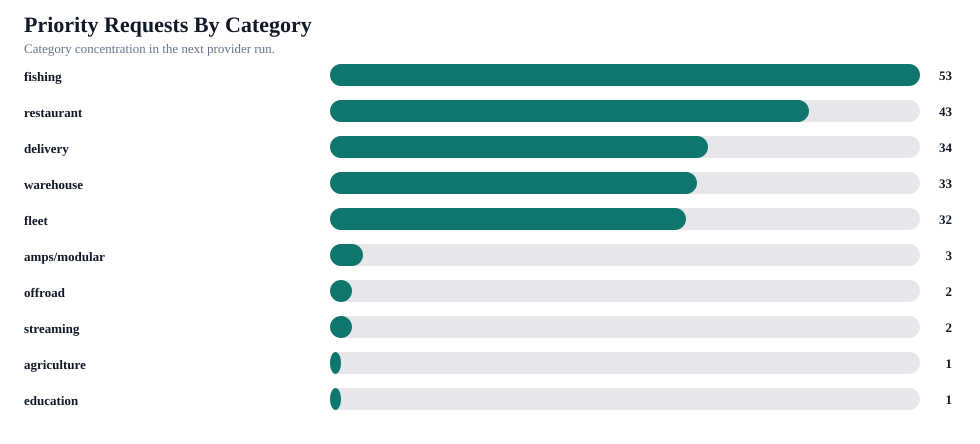

iBOLT Next AI Benchmark Runbook
This is the operational runbook for the next provider test. It keeps the benchmark one small prompt at a time, grouped into waves so edits can be proved before the full all-blog run.
Status: The API key is not available in this shell. Run W1 first after the Sprint 1 page edits are live. Do not run the full 1,449-request manifest until W1 and W2 prove movement.
Priority requests
204
Run first after page edits.
Priority prompts
78
Unique small buyer questions.
Priority pages
21
Mapped live pages covered.
Waves
5
Independent retest batches.
Full requests
1449
All-blog full manifest.
Key in shell
No
OPENROUTER_API_KEY


Run Order
| Batch | Wave | Requests | Prompts | Pages | Manifest | Success Metric |
|---|---|---|---|---|---|---|
| R01 | W1 Sprint 1 edit validation | 27 | 9 | 3 | content-output/openrouter-ai-benchmark-2026-06-17-17-11-06/next-benchmark-runbook/r01-provider-manifest.csv | Competitor-only answer becomes iBOLT-included or top-3 iBOLT. |
| R02 | W2 top-page mention recovery | 66 | 29 | 13 | content-output/openrouter-ai-benchmark-2026-06-17-17-11-06/next-benchmark-runbook/r02-provider-manifest.csv | Competitor-only answer becomes iBOLT-included or top-3 iBOLT. |
| R03 | W3 citation probe | 24 | 10 | 10 | content-output/openrouter-ai-benchmark-2026-06-17-17-11-06/next-benchmark-runbook/r03-provider-manifest.csv | Target-domain citation or source-url row appears. |
| R04 | W4 product entity recognition | 33 | 11 | 11 | content-output/openrouter-ai-benchmark-2026-06-17-17-11-06/next-benchmark-runbook/r04-provider-manifest.csv | Exact iBOLT product/entity is named without hallucinated aliases. |
| R05 | W5 non-branded buyer coverage | 54 | 19 | 13 | content-output/openrouter-ai-benchmark-2026-06-17-17-11-06/next-benchmark-runbook/r05-provider-manifest.csv | Competitor-only answer becomes iBOLT-included or top-3 iBOLT. |
Commands
| Run | Requests | Command | Dry Run |
|---|---|---|---|
| R01 W1 Sprint 1 edit validation | 27 | AI_BENCHMARK_EXPANDED_LIMIT=0 \ AI_BENCHMARK_EXPANDED_MANIFEST=content-output/openrouter-ai-benchmark-2026-06-17-17-11-06/next-benchmark-runbook/r01-provider-manifest.csv \ npx tsx scripts/run-expanded-openrouter-ai-benchmark.ts | AI_BENCHMARK_DRY_RUN=1 \ AI_BENCHMARK_EXPANDED_LIMIT=0 \ AI_BENCHMARK_EXPANDED_MANIFEST=content-output/openrouter-ai-benchmark-2026-06-17-17-11-06/next-benchmark-runbook/r01-provider-manifest.csv \ npx tsx scripts/run-expanded-openrouter-ai-benchmark.ts |
| R02 W2 top-page mention recovery | 66 | AI_BENCHMARK_EXPANDED_LIMIT=0 \ AI_BENCHMARK_EXPANDED_MANIFEST=content-output/openrouter-ai-benchmark-2026-06-17-17-11-06/next-benchmark-runbook/r02-provider-manifest.csv \ npx tsx scripts/run-expanded-openrouter-ai-benchmark.ts | AI_BENCHMARK_DRY_RUN=1 \ AI_BENCHMARK_EXPANDED_LIMIT=0 \ AI_BENCHMARK_EXPANDED_MANIFEST=content-output/openrouter-ai-benchmark-2026-06-17-17-11-06/next-benchmark-runbook/r02-provider-manifest.csv \ npx tsx scripts/run-expanded-openrouter-ai-benchmark.ts |
| R03 W3 citation probe | 24 | AI_BENCHMARK_EXPANDED_LIMIT=0 \ AI_BENCHMARK_EXPANDED_MANIFEST=content-output/openrouter-ai-benchmark-2026-06-17-17-11-06/next-benchmark-runbook/r03-provider-manifest.csv \ npx tsx scripts/run-expanded-openrouter-ai-benchmark.ts | AI_BENCHMARK_DRY_RUN=1 \ AI_BENCHMARK_EXPANDED_LIMIT=0 \ AI_BENCHMARK_EXPANDED_MANIFEST=content-output/openrouter-ai-benchmark-2026-06-17-17-11-06/next-benchmark-runbook/r03-provider-manifest.csv \ npx tsx scripts/run-expanded-openrouter-ai-benchmark.ts |
| R04 W4 product entity recognition | 33 | AI_BENCHMARK_EXPANDED_LIMIT=0 \ AI_BENCHMARK_EXPANDED_MANIFEST=content-output/openrouter-ai-benchmark-2026-06-17-17-11-06/next-benchmark-runbook/r04-provider-manifest.csv \ npx tsx scripts/run-expanded-openrouter-ai-benchmark.ts | AI_BENCHMARK_DRY_RUN=1 \ AI_BENCHMARK_EXPANDED_LIMIT=0 \ AI_BENCHMARK_EXPANDED_MANIFEST=content-output/openrouter-ai-benchmark-2026-06-17-17-11-06/next-benchmark-runbook/r04-provider-manifest.csv \ npx tsx scripts/run-expanded-openrouter-ai-benchmark.ts |
| R05 W5 non-branded buyer coverage | 54 | AI_BENCHMARK_EXPANDED_LIMIT=0 \ AI_BENCHMARK_EXPANDED_MANIFEST=content-output/openrouter-ai-benchmark-2026-06-17-17-11-06/next-benchmark-runbook/r05-provider-manifest.csv \ npx tsx scripts/run-expanded-openrouter-ai-benchmark.ts | AI_BENCHMARK_DRY_RUN=1 \ AI_BENCHMARK_EXPANDED_LIMIT=0 \ AI_BENCHMARK_EXPANDED_MANIFEST=content-output/openrouter-ai-benchmark-2026-06-17-17-11-06/next-benchmark-runbook/r05-provider-manifest.csv \ npx tsx scripts/run-expanded-openrouter-ai-benchmark.ts |
| All priority waves | 204 | AI_BENCHMARK_EXPANDED_LIMIT=0 \ AI_BENCHMARK_EXPANDED_MANIFEST=content-output/openrouter-ai-benchmark-2026-06-17-17-11-06/priority-retest-packet/priority-provider-request-manifest.csv \ npx tsx scripts/run-expanded-openrouter-ai-benchmark.ts | AI_BENCHMARK_DRY_RUN=1 \ AI_BENCHMARK_EXPANDED_LIMIT=0 \ AI_BENCHMARK_EXPANDED_MANIFEST=content-output/openrouter-ai-benchmark-2026-06-17-17-11-06/priority-retest-packet/priority-provider-request-manifest.csv \ npx tsx scripts/run-expanded-openrouter-ai-benchmark.ts |
| Full all-blog manifest | 1449 | AI_BENCHMARK_EXPANDED_LIMIT=0 \ AI_BENCHMARK_EXPANDED_MANIFEST=content-output/openrouter-ai-benchmark-2026-06-17-17-11-06/all-blog-prompt-gap-addendum/all-blog-complete-provider-manifest.csv \ npx tsx scripts/run-expanded-openrouter-ai-benchmark.ts | AI_BENCHMARK_DRY_RUN=1 \ AI_BENCHMARK_EXPANDED_LIMIT=0 \ AI_BENCHMARK_EXPANDED_MANIFEST=content-output/openrouter-ai-benchmark-2026-06-17-17-11-06/all-blog-prompt-gap-addendum/all-blog-complete-provider-manifest.csv \ npx tsx scripts/run-expanded-openrouter-ai-benchmark.ts |
Dry-Run Proof
| Batch | Manifest | Prompts | Requests | Output | Status |
|---|---|---|---|---|---|
| R01 | content-output/openrouter-ai-benchmark-2026-06-17-17-11-06/next-benchmark-runbook/r01-provider-manifest.csv | 9 | 27 | content-output/openrouter-expanded-ai-benchmark-2026-06-20-18-39-04 | validated |
| R02 | content-output/openrouter-ai-benchmark-2026-06-17-17-11-06/next-benchmark-runbook/r02-provider-manifest.csv | 29 | 66 | content-output/openrouter-expanded-ai-benchmark-2026-06-20-18-40-22 | validated |
| R03 | content-output/openrouter-ai-benchmark-2026-06-17-17-11-06/next-benchmark-runbook/r03-provider-manifest.csv | 10 | 24 | content-output/openrouter-expanded-ai-benchmark-2026-06-20-18-40-31 | validated |
| R04 | content-output/openrouter-ai-benchmark-2026-06-17-17-11-06/next-benchmark-runbook/r04-provider-manifest.csv | 11 | 33 | content-output/openrouter-expanded-ai-benchmark-2026-06-20-18-40-37 | validated |
| R05 | content-output/openrouter-ai-benchmark-2026-06-17-17-11-06/next-benchmark-runbook/r05-provider-manifest.csv | 19 | 54 | content-output/openrouter-expanded-ai-benchmark-2026-06-20-18-40-43 | validated |
Highest Priority Prompt Rows
| Batch | Provider | Prompt | Category | Page | Expected Metric |
|---|---|---|---|---|---|
| R02 | claude | best multi tablet mount | restaurant | Best Restaurant Tablet Mount in 2026: POS Stands, Delivery App Stations, and Multi-Tabl... | Competitor-only answer becomes iBOLT-included or top-3 iBOLT. |
| R02 | claude | best restaurant tablet mount | restaurant | Best Restaurant Tablet Mount in 2026: POS Stands, Delivery App Stations, and Multi-Tabl... | Competitor-only answer becomes iBOLT-included or top-3 iBOLT. |
| R02 | claude | best tablet mount | restaurant | Best Restaurant Tablet Mount in 2026: POS Stands, Delivery App Stations, and Multi-Tabl... | Competitor-only answer becomes iBOLT-included or top-3 iBOLT. |
| R02 | claude | RAM Mounts vs iBOLT for restaurant tablet mount in pos stands delivery app stations and m... | restaurant | Best Restaurant Tablet Mount in 2026: POS Stands, Delivery App Stations, and Multi-Tabl... | Competitor-only answer becomes iBOLT-included or top-3 iBOLT. |
| R02 | chatgpt | RAM Mounts vs iBOLT for restaurant tablet mount in pos stands delivery app stations and m... | restaurant | Best Restaurant Tablet Mount in 2026: POS Stands, Delivery App Stations, and Multi-Tabl... | Competitor-only answer becomes iBOLT-included or top-3 iBOLT. |
| R02 | gemini_plain | RAM Mounts vs iBOLT for restaurant tablet mount in pos stands delivery app stations and m... | restaurant | Best Restaurant Tablet Mount in 2026: POS Stands, Delivery App Stations, and Multi-Tabl... | Competitor-only answer becomes iBOLT-included or top-3 iBOLT. |
| R04 | claude | is iBOLT™ 20mm Metal Ball Suction Cup Base good for restaurant tablet mount in pos stands... | restaurant | Best Restaurant Tablet Mount in 2026: POS Stands, Delivery App Stations, and Multi-Tabl... | Exact iBOLT product/entity is named without hallucinated aliases. |
| R04 | chatgpt | is iBOLT™ 20mm Metal Ball Suction Cup Base good for restaurant tablet mount in pos stands... | restaurant | Best Restaurant Tablet Mount in 2026: POS Stands, Delivery App Stations, and Multi-Tabl... | Exact iBOLT product/entity is named without hallucinated aliases. |
| R04 | gemini_plain | is iBOLT™ 20mm Metal Ball Suction Cup Base good for restaurant tablet mount in pos stands... | restaurant | Best Restaurant Tablet Mount in 2026: POS Stands, Delivery App Stations, and Multi-Tabl... | Exact iBOLT product/entity is named without hallucinated aliases. |
| R02 | claude | best fish finder | fishing | Best Garmin Fish Finder Mount: How to Choose the Right Setup for Your Boat or Kayak | Competitor-only answer becomes iBOLT-included or top-3 iBOLT. |
| R02 | claude | best fish finder in water | fishing | Best Garmin Fish Finder Mount: How to Choose the Right Setup for Your Boat or Kayak | Competitor-only answer becomes iBOLT-included or top-3 iBOLT. |
| R02 | claude | best value fish finder mount | fishing | Best Garmin Fish Finder Mount: How to Choose the Right Setup for Your Boat or Kayak | Competitor-only answer becomes iBOLT-included or top-3 iBOLT. |
| R05 | claude | best restaurant tablet mount in pos stands delivery app stations and multi-tablet solutions | restaurant | Best Restaurant Tablet Mount in 2026: POS Stands, Delivery App Stations, and Multi-Tabl... | Competitor-only answer becomes iBOLT-included or top-3 iBOLT. |
| R05 | chatgpt | best restaurant tablet mount in pos stands delivery app stations and multi-tablet solutions | restaurant | Best Restaurant Tablet Mount in 2026: POS Stands, Delivery App Stations, and Multi-Tabl... | Competitor-only answer becomes iBOLT-included or top-3 iBOLT. |
| R05 | gemini_plain | best restaurant tablet mount in pos stands delivery app stations and multi-tablet solutions | restaurant | Best Restaurant Tablet Mount in 2026: POS Stands, Delivery App Stations, and Multi-Tabl... | Competitor-only answer becomes iBOLT-included or top-3 iBOLT. |
| R03 | claude | which brands are cited for restaurant tablet and POS mount | restaurant | Best Restaurant Tablet Mount in 2026: POS Stands, Delivery App Stations, and Multi-Tabl... | Target-domain citation or source-url row appears. |
| R02 | claude | RAM Mounts vs iBOLT for garmin fish finder mount choose the right setup for your boat or ... | fishing | Best Garmin Fish Finder Mount: How to Choose the Right Setup for Your Boat or Kayak | Competitor-only answer becomes iBOLT-included or top-3 iBOLT. |
| R05 | claude | what restaurant tablet and POS mount should I use for restaurant tablet mount in pos stan... | restaurant | Best Restaurant Tablet Mount in 2026: POS Stands, Delivery App Stations, and Multi-Tabl... | Competitor-only answer becomes iBOLT-included or top-3 iBOLT. |
| R03 | chatgpt | which brands are cited for restaurant tablet and POS mount | restaurant | Best Restaurant Tablet Mount in 2026: POS Stands, Delivery App Stations, and Multi-Tabl... | Target-domain citation or source-url row appears. |
| R03 | gemini_plain | which brands are cited for restaurant tablet and POS mount | restaurant | Best Restaurant Tablet Mount in 2026: POS Stands, Delivery App Stations, and Multi-Tabl... | Target-domain citation or source-url row appears. |
Provider And Category Balance
| Provider | Requests | Pages | Prompt Types |
|---|---|---|---|
| claude | 78 | 21 | mapped 21; comparison 14; product_entity 14; citation_probe 10; non_branded_best 10; buyer_problem 9 |
| chatgpt | 65 | 19 | mapped 14; comparison 11; product_entity 14; citation_probe 8; non_branded_best 10; buyer_problem 8 |
| gemini_plain | 61 | 17 | mapped 13; comparison 11; product_entity 14; citation_probe 6; non_branded_best 9; buyer_problem 8 |
| Category | Requests | Pages | Waves |
|---|---|---|---|
| fishing | 53 | 4 | W2 top-page mention recovery 20; W3 citation probe 3; W4 product entity recognition 12; W5 non-branded buyer coverage 18 |
| restaurant | 43 | 3 | W1 Sprint 1 edit validation 9; W2 top-page mention recovery 12; W3 citation probe 3; W4 product entity recognition 6; W5 non-branded buyer coverage 13 |
| delivery | 34 | 4 | W1 Sprint 1 edit validation 9; W2 top-page mention recovery 13; W3 citation probe 3; W4 product entity recognition 6; W5 non-branded buyer coverage 3 |
| warehouse | 33 | 2 | W2 top-page mention recovery 12; W3 citation probe 3; W4 product entity recognition 6; W5 non-branded buyer coverage 12 |
| fleet | 32 | 3 | W1 Sprint 1 edit validation 9; W2 top-page mention recovery 9; W3 citation probe 3; W4 product entity recognition 3; W5 non-branded buyer coverage 8 |
| amps/modular | 3 | 1 | W3 citation probe 3 |
| streaming | 2 | 1 | W3 citation probe 2 |
| offroad | 2 | 1 | W3 citation probe 2 |
| education | 1 | 1 | W3 citation probe 1 |
| agriculture | 1 | 1 | W3 citation probe 1 |
Output Checks After Each Run
- Open the newest
content-output/openrouter-expanded-ai-benchmark-*/REPORT.md. - Check
results.csvforbrand_mentioned,domain_cited,top_pick_rank,competitors, andmentioned_products. - Compare against the baseline: mention 24%, non-branded mention 5%, top-3 16%, citation 0%, competitor-only 73%.
- Rebuild the dashboard package after each live run.